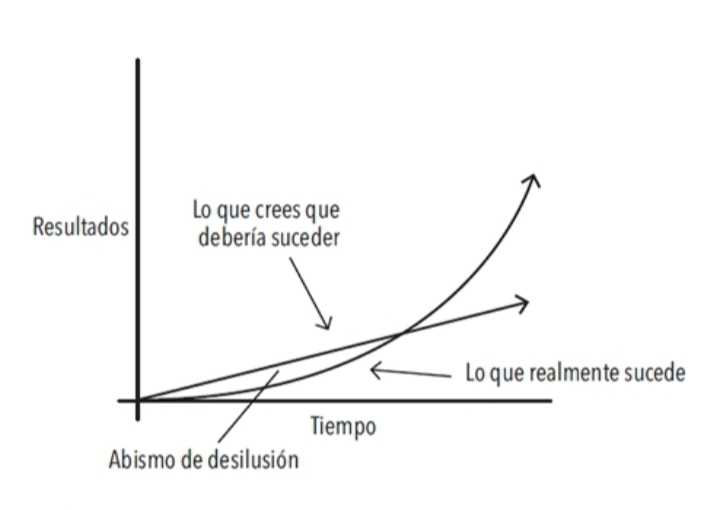

La meseta de potencial latente

|9.53| FIGURA 2. Solemos suponer que el progreso se da de manera lineal y ascendente. Por lo menos esperamos que suceda rápido. En la realidad, los resultados de nuestros esfuerzos suelen tomar tiempo y retrasarse. No es sino meses o incluso años después cuando nos damos cuenta del verdadero valor de todo el trabajo que hemos realizado. Esto puede tener como resultado un «abismo de desilusión», un punto en el que la gente se siente descorazonada tras haber invertido semanas o incluso meses de trabajo duro sin experimentar ningún resultado aparente. Sin embargo, su trabajo no se desperdició. Tan solo se acumuló. No es hasta mucho tiempo después cuando el verdadero valor del esfuerzo previo es revelado.
|9.55| Todas las cosas importantes provienen de comienzos modestos. La semilla de cada hábito es una pequeña decisión. Pero conforme esa decisión se repite, un hábito nuevo surge y se va fortaleciendo.
|9.56| Pero ¿qué es lo que determina que mantengamos un hábito el tiempo suficiente para sobrevivir la meseta del potencial latente y conseguir llegar al otro lado? ¿Qué es lo que provoca que algunas personas regresen a sus malos hábitos mientras otras consiguen disfrutar de los efectos acumulativos de los hábitos favorables?